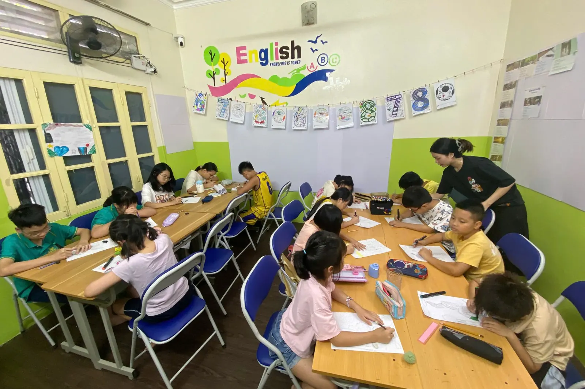

Who is Venus for?
Venus is the second level of HEC's ELA pathway, after Mars. Children can already sound out three-letter words; in Venus they read more fluently, grow their vocabulary to about 300–400 words, take short dictations and write a first paragraph using sentence frames before writing alone.
- Children who have completed Mars, or placed at that level in the placement test.
- Children who can sound out three-letter words but hesitate over sentences and need read-aloud practice for fluency.
- Children who speak in short sentences and need to talk about their day, say where things are, and ask and answer about time.
- Families who want their child to build a reading and writing habit before moving up.
We will say so plainly and place your child in Mars to build the foundation properly — HEC places children by level, not just by age. The placement test is free.
How is an ELA class different from a regular English class?
Each Venus cycle is built around big questions such as “How do I talk about my day?”. Children answer by doing everything ELA asks: reading aloud and retelling, taking dictation, speaking with sentence frames, then writing a 4–6 sentence paragraph — rather than memorizing a word list. At the end of the 8-week cycle each child presents an integrated project and the family receives a progress note.
Why does this work better? See the seven research findings in What is ELA? ELA vs ESL.
Content, goals and method
Big ideas
- Daily Life & Routines
- Places & Directions
- Time & Activities
Essential questions
- How do I talk about my day?
- How do I describe where things are?
- How do I ask and answer about time?
Intended outcomes
- Phonics consolidation + 300–400 words
- Present simple Q&A, prepositions, time
- Listening for details; short dictations
- Show‑and‑tell 1–2 minutes
Success criteria
- Read 70–90 wpm ≥95% accuracy
- Write a 4–6 sentence paragraph with correct punctuation
- Speak 1–2 minutes using picture cues
Educational journey
- Entry: short reading + speaking probe places students into pace groups.
- Weeks 1–2: routines language; time; high‑frequency verbs; first paragraph with frames.
- Weeks 3–4: prepositions with TPR and drawing tasks; notes → paragraph.
- Weeks 5–6: read‑aloud retell; peer feedback with checklist.
- Weeks 7–8: integrated project presentation; family progress note.
- Next: Look 2 (Neptune) focusing on past‑time verbs and inference.
How we teach
- Guided oral frames for Q&A
- Dictations to link listening and print
- Cumulative retrieval of vocabulary
- Frequent low‑stakes checks
INTASC connections (course‑specific)
- Std 1 – Learner Development: Move from single words to 4–6 sentence turns via stems and rehearsal.
- Std 2 – Learner Differences: Tiered speaking tasks; picture‑choice supports for shy speakers.
- Std 3 – Learning Environments: Talk‑moves and partner roles ensure equitable airtime.
- Std 6 – Assessment: Weekly conferences with speaking rubrics; dictation error analysis guides reteach.
- Std 7 – Planning: Can‑Do descriptors drive lesson objectives and success criteria.
- Std 8 – Instructional Strategies: TPR for prepositions; read‑alouds with dialog practice; structured pair‑shares.
Who teaches your child?
The program is led by a teacher with a New Jersey (USA) teaching certificate, who teaches to the US InTASC professional standards for teachers — the specific criteria are listed in each section of this page.
HEC has trained foreign and Vietnamese teaching assistants with degrees in English or education, who support small-group discussion, marking and demanding tasks. Research from the Education Endowment Foundation (UK) found that oral language work led by trained teaching assistants is about as effective as teacher-led work.
The ELA pathway at HEC
Every class is a step on the ELA pathway from kindergarten to IELTS; HEC places children by level, not just by age.
- Mars · Kindergarten · National Geographic Look Starter
- Venus · National Geographic Look 1 · you are here
- Neptune · National Geographic Look 2
- Jupiter · Advanced ELA, Grades 3–4 · Reach Higher
- SKY 1 · Advanced ELA, Grades 5–6 · Oxford Discover
- Sanrio Grade 6 · Academic writing & grammar
- Sun · IELTS
There is also Mercury, Cambridge Math taught in English — learning language through content.
Standards and credentials
- Common Core ELA standards (USA)
- Cambridge English levels
- CEFR framework (matching the Cambridge levels)
- New Jersey–certified teacher
- Licensed by the Hanoi Department of Education and Training
FAQ
Who is the Venus class for?
Children who have completed Mars or placed at that level: they can sound out three-letter words, are learning to read short sentences and are ready to grow their vocabulary to 300–400 words. HEC places children by level with a free placement test, not by age alone.
What will my child achieve after one Venus course?
Read 70–90 words per minute at 95%+ accuracy; write a 4–6 sentence paragraph with correct punctuation; speak for 1–2 minutes from picture cues. These are learning goals checked throughout the 8-week course.
How is Venus different from a regular English conversation class?
It's taught the ELA way: children read aloud and retell stories, take dictation, write paragraphs with sentence frames and present a project, rather than only memorizing words and set phrases. The teacher corrects each child's own work because classes have no more than 12 students.
Which class comes after Venus?
Neptune (National Geographic Look 2), which focuses on past-tense verbs, informational reading and paragraphs with evidence.
What are Venus's schedule and fees?
Mondays and Thursdays, 17:30–19:00. The fee is 210,000 VND per 90-minute session, about 1,680,000–1,890,000 VND a month, billed only for sessions held, with a 5% sibling discount and currently no book fee.